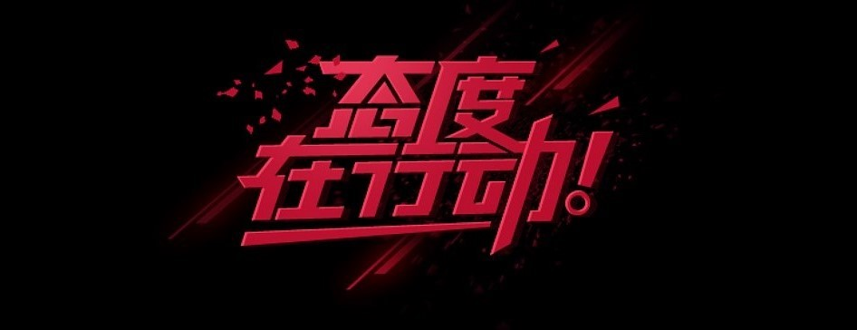

- 
《来自天堂的魔鬼》是邓紫棋音乐专辑《新的心跳》的电音主打曲，讲述的是她自己的情感经历。邓紫棋有过一个喜欢的人，她知道对方也喜欢自己，但是对方不说，她也装作不知道，最后这段感情只能无疾而终。
《私奔》歌词中透露出一股淡淡的哀伤，为了梦想，“我们”一直追逐着，付出了代价，得到的却是什么？爱情，依旧是郑钧《私奔》的主题。自由和真爱是郑钧一直所追求，在这条追寻的道路上，郑钧走得并不顺畅，但郑钧却没有退缩。《私奔》是郑钧的写照，也是郑钧的理想。

《泡沫》是邓紫棋演唱的歌曲，由邓紫棋创作词曲，收录于邓紫棋2012年发行的音乐专辑《Xposed》。2013年，该曲获得第13届全球华语歌曲排行榜“年度最受欢迎二十大金曲奖”；2014年，获得第8届无线音乐盛典咪咕汇“年度咪咕音乐人气金曲奖”；2015年，获得2015QQ音乐年度盛典“QQ音乐巅峰榜人气搜索奖”
汤 臣 一 品 业 户 组 : 王 子 华 李 承 学 纪 涛 张 佳 智 周 宇 航 谢 嘉 豪
互联网宗教信息服务许可证：耶（1314）5201314 增值电信业务经营许可证：耶-5201314 耶-5201314 工业和信息化部备案管理系统网站
汤臣一品业户组版权所有©520-1314杭州乐读科技有限公司运营：浙网文[1314] 5201-314号 浙公网安备 5201314号 算法服务公示信息